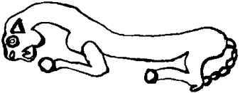

Pazar gününün tenhalığından yararlanmak isteyen Argunlar hiç vakit kaybetmediler. Minik bir damla Japon yapıştırıcısı ile taşın kırık ucunu onardılar. Bu kez kapının yanında değil de Boğaz’a bakan pencerelerden birinin önünde, yaratığın cisimlenme olayı ufak tefek farklarla yinelendi. Yaratığın kabuklanma süreci çok daha yavaş fakat bir o kadar da çığlıksız cereyan etti.
Anlaşılan en büyük farkı gün ışığı yaratıyordu. Çift kat camlardan geçerek biraz güçlenen solgun kış güneşi, şekillenmekte olan bedenine vurdukça küçük, kesik, neredeyse memnuniyet ifade eden homurtular çıkarıyordu yaratık. Bir de galiba bu memnuniyetin sonucu olsa gerek, penisi bu sefer pek spirale benzemiyordu. Dolayısıyla Tankut’un “oha”sı çok daha okkalı oldu. Canavar, alt çenesinin oluşumu henüz tamamlanmazdan önce kocaman, uzun, pembe, sarı, kırmızı sivri dilini sonuna kadar dışarı çıkartarak izleyicilerine gösterdi. Galiba sevinmişti garip.
Koca bedeni ile, yine kabuklarını döke saça gelerek Argunların önünde durdu. Argun Afaki derin, dua eder gibi bir sesle, son derece saygılı bir şekilde sordu:
“Maşlumha ya atik yomin?” (Nasılsın ey günlerin eskisi?)
Cevap, kalın, heybetli, mehabetli, kabuklu, klipalı bir bedenden çıktığına inanılmayacak denli tenor ve berrak bir sesle verildi:
“Kol biseder beni, kol biseder! Ve’ata?” (Her şey iyidir oğlum, iyidir. Ya sen?)
Tankut, ağzı açık ayran budalası gibi, Argun’un sular sellercesine İbranice paralamasına bakıyor, niye onun patron kendinin çalışan olduğunu anlar gibi oluyordu. Argun devam etti:
“Ata rotseh maşeho liştot?” (İçecek bir şey ister misin?)
“Lo... lo... toda raba!” (Yok, yok... çok sağ ol!) Yaratık bunları neredeyse panik içinde söylemişti. Anlaşılan sıvılarla başı pek hoş değildi. Geçen sefer de vücuduna her sıvı dokunuşunda çığlığı basmamış mıydı?
Argun konuyu değiştirdi:
“Me’eyfo ata?” (Nereden geliyorsun?)
“Ani me-hamizrah, me-hatsafon, me-hadarom ve me-hama’arav.” (Doğudan, kuzeyden, güneyden ve batıdan.)
“Ma şimha?” (Adın nedir?)
“Şimi Albız!” (Adım Albız’dır!)
Argun ağız dolusu küfretmemek için kendini zor tuttu. Albız ha, şu çocukluklarında okumaya doyamadıkları Orta Asya romanlarında, çizgi romanlarda bol bol geçen Albız? Vay Albız'ın dölü, Albız oğlu Albız! Soğuk, hafif kırgın, kayıtsız olmaya çalışan bir sesle sordu:
“Türk müsün usta?”
Cevabı kalın, babacan bir sesle geldi:
“Tabii ki Türküm evlat. Türküm türkü söylerim.”
“Niye söylemiyorsun o zaman?”
“Türkü mü? Söyleyeyim...”
“Yok yok, anlamazlıktan gelme! Türk olduğunu...”
“Ne’blim oğlum, sen gül ağzını bir açtın pir açtın, tuttun yok atik yominmiş yok bilmem ne? Ben de mecburen İbranice konuşmak durumunda kaldım. Ayrıca atik yomin senin babandır, tamam mı! Henüz birkaç milyon yıkık ömür ya sürdük ya süremedik şu kahpe dünyanızda!”
Argunlar bu Türkçe konuşan Albız’ın tanıdık diskurundan dolayı hayatlarının şaşkınlığını yaşıyorlardı. Albız’ın yaşına bakarak birtakım çıkarsamalar yapan Tankut, artık kendi de onunla konuşabiliyor, bilginin kaynağına aracısız ulaşıyor diye sevinçli: “Albız Dede, sen o zaman bizim kitaplardan bildiğimiz her şeyin on yüz milyon kat fazlasını ve doğrusunu bilirsin, bi yol de bakalım bize, mesela o hep merak ettiğimiz Salur Kazan, Dede Korkut, Bey Böyrek gibi tarihi şahsiyetler gerçek mi? Mesela eski Uygur kağanları ne menem adamlardı? Sahi sen Uygurca da konuşabilir misin?”
Albız, delikanlının araştırma, öğrenme hevesini kırmak istemedi. Son sorudan başladı:
“Yaglakar lehçesi ile konuşsam olur mu?” diye sordu ve sonra nazal tınılı, vurgusu çok değişik ama Türkçeye yine de yakın bir dil ile devam etti:
“Sizler, ikki Argunlar barınlar men bu ödte yeğrek tüş taşıngı algalı barayın kim ol munta turur.”
Ortaparmağındaki Hayal Taşı’na sıkı sıkıya sanları Argun Afaki:
“Höst... benim o, o benimdir ancak!” diye bağrındı. Tankut cahili,
“Abi ne yırtınıyorsun? Albız Dede ile ne güzel muhabbet ediyorduk?” dedi saf saf. Felsefe bölümünde iken “Eski Uygur felsefesine giriş” dersini hakkını vererek alan Argun Afaki:
“Yoo... Yok öyle yağma, Yağlakar bozuntusu! Her gördüğün Göktürk balasının eti yenmez! Sen de altından ne Çapanoğlu çıkacağını bilmeden, bilir bilmez, anlar anlamaz her gördüğün Albız’la muhabbete girişme Tankut! Bu İblis metatezi ne diyor biliyor musun? Aynen ‘Siz iki Argun gidin, ben bu zamanda, şimdi, burada bulunan, her şeyden iyi, değerli Hayal Taşı’nı alayım’ diyor. Yok öyle Yağma Hasan’ın böreği! Yağlakar sülüğü! Yürrü, yaylan, ense tıraşındaki klipaları görelim...”
Albız, amacının iki dakikada tabak gibi anlaşılmasından dolayı hafif kaygılı, kendi kendini uyardı:
“Ulan bu Türkler görmeyeli pek cin olmuş, ben Horasan otlaklarında bırakalı beri pek gözü açılmış bunların, aman dikkatli olmak gerek.”
Argun Bey, duruma aymıştı. Düşündü. Evet, Albız’ın tüm derdi Hayal Taşı ile bir olmaktı. Ancak bunu yapabilmesi için birinin onu çağırması, onun da lava-magmaya bürünmesi ve taşı fiziki olarak eline geçirip yutması gerekti. Üstelik, çağıranın elinden taşı zorla alması yasaktı. Çağıran gönüllü olarak taşı çıkaracak ve kendi elleriyle bir ayı kafatasının üzerine koyarak Albız’a sunacaktı. Aptalca, ama yapılacak bir şey yok, kural böyleydi. Ancak o zaman şunların (yani bizim) berbat dünyaları yaşanacak bir yere benzeyecek, ancak o zaman dış uzayın derinliklerinde alesta bekleyen kabilesini buraya davet edebilecekti. Albız, bu varsayımların doğru olduğunu kanıtlar bir biçimde gürültülü bir kahkaha attı:
“Evlat, kendine gel ben niye Yağlakar olayım? Demin İbranice konuşurken Yahudi miydim? Çağırdınız geldim, sizin için tatlı uykumu bozdum, yatalı bin yılcık anca olmuştu. Uygurca konuş dediniz konuştum. Çabuk anlayasınız diye bildiğiniz bir şeyden bahsettim. Ne yapayım canım ben sizin bitli taşınızı? Benim geldiğim yerde okkası on para etmez bu taşların.”
Argun Afaki biraz sakinleşmişti. Yine de tamamen gevşemedi.
“Ya niçin geldin?”
“Yahu, çağırdınız geldim. Ne bileyim ne istiyorsunuz? Ne tuhafsınız. Biriniz sağıma soluma kimyasal silahla saldırıyor, kurşuna tutuyor; hoş, lezzetli şeylerdi bu sonuncular, diğeri hakaret ediyor, kaba davranıyor!”
Argun iyice sakinleşti. Sakinleştiği için, dehası her zamanki çalışma ritmine geri döndü. Vay vay vay! Bilmezlik ve bilinmezlik denizlerinde, cehalet ummanlarında, pusulasız, usturlapsız, haritasız, yalnızca pruvada küçücük mumlar yakarak çıktıkları bu aydınlanma ve aydınlatma seferinde, Demirkazık yıldızının kendisine bodoslamadan toslamışlardı. Dehasının minik bir çarkında filiz veren bu düşüncecik, bu imgelem, bir saniye sonra koca koca çarkları, milleri devinime geçirmiş, duvar saatine dönen kafasının içinde hummalı bir faaliyet başlamıştı. Bunu kurarken kısa bir süre de olsa bu dünyadan ayrıldığı için, Tankut yine yapacağını yapmış, erken davranmış, Albız ile yarenlik ediyordu, Türki olduğu için Albız’a hep o dünyayla ilgili sorular soruyordu:
“Yav Albız Dede, hiç Dede Korkut’u tanıdın mı?”
“Tanımam mı evlat? Birlikte çok boy boyladığımız soy soyladığımız vardır kalın Oğuz ellerinde!”
“Şu Aktürklerin tam listesi de vardır sende garanti?”
“Olmaz mı yavrucum, kendi ellerimle yaptım, uzuun bir liste...”
“Pekii şeyi de söyle... şeyi... hah... Hiç XIX. yüzyılda Müslüman-Türk saatçi olabilir mi dede?”
“Yok yavrum. Hiç olur mu, aaa? XIX. yüzyılda ne kadar Müslüman-Türk görünen saatçi varsa hepsi bizim Sabetay’ın gizli müritleriydi çocuğum...”
“Sağ ol dede! Ben de öyle düşünmüştüm...”
Damadının bönlüğü karşısında Albız’dan neredeyse utanan Argun Afaki devreye girmek, kendi sorularını sormak gerektiğini anladı. Biraz da bu dede-torun muhabbetinin uyandırdığı laubaliliği aşmak için, ciddiyetle:
“Sayın Albız, benim de başka bir seviyede birkaç sorum olacak, mesela kutsal kitaplar hakkında ne düşünüyorsunuz?”
“Sayın Afaki, başkasının yayınları üzerine yorum yapmak yakışık almaz kanaatindeyim efendim. Citalion index’lerindeki referanslara bakılırsa... Ayrıca çok satanlar listesinden hiç inmediklerine göre, var bir hikmet.”
“Anlıyorum sizi üstat. Taraf olduğunuz için konuşmak istemiyorsunuz. Nezaketinize ve bilimsel tarafsızlığınıza hayran kaldım. Peki ya evrim meselesi, mesela maymundan geldiğimiz doğru mu?”
“Bazılarınız için mutlak gerçeklik efendim, hah... hah!... Yine de hangi anlamda sorduğunuzu pek anlamadım.”
“Ya uzayda hayat?”
“İlahi evladım, uzayda hayat olmasa, sen ben böyle karşılıklı konuşabilir miydik? Dünyanız uzayın dışında mıdır?”
“Anlıyorum üstat. Bilim açısından tek bir kanıt bile kâfidir diyorsunuz. Peki biz bu uzaydaki dünyamızı elimizde tutabilecek miyiz?”
“Orası da size kalmış sayın Afaki. Kesin bir şey yok, fosil yakıtlarınızdan, nükleer oyuncaklarınızdan, mımhh o ne lezzet, ımpıh... ımpııh... vazgeçer, çevreyi ve havayı akıllıca kullanırsanız, yağış sistemlerine müdahale etmezseniz, daha epeyce idare eder. Sizin dışınızdaki bir nedenden dolayı dünyanızı yitireceksiniz, mesela Güneş’iniz sönecek diye üzülmeyin, çünkü milyarlarca yıl sonra siz, siz olmayacaksınız zaten. Bakın bana!”
“Üstadım gerçekten pek hikmetli oldu. Size son bir soru daha yöneltebilir miyim?”
“Efendim, ortalığı iyice Kim Hâlâ Beş Yüz Milyar İster’e çevirdiniz. Benim paraya ihtiyacım yok ki!”
“Peki, gerçek sebeb-i ziyaretiniz?”
“Hoop, hop dedik evlat, araya parça sokma. Ne inatçı şeysin öyle. Bunu daha önce yanıtladım sanıyorum. Soracaksan sor bakalım o son sorunu!”
Albız’ın heyecanlandığını sizli bizli üslubunu bozmasından anlayan Argun Afaki,
“Dur şu Albız oğlu Albız’a külahı ters giydirecek bir soru sorayım, biraz konuşturayım, hemen savuşup gitmesin öyle” diye düşündü. Sesine iyice ciddi bir tonlama verdi:
“Aziz Albız, muhakkak malumunuzdur, efendim biz bir bilgi projesinin içindeyiz, gerçi koca bir holding olduk ama ansiklopedi işi ilk göz ağrımız olduğu için hâlâ çok değerli, acaba sizden rica etsem, yani hazır sizi yakalamış ve bu imkânı bulmuşken, bize acaba uygun gördüğünüz bir yerden başlayarak biz Türklerin tarihini anlatabilir misiniz?”
“Yakalamak” sözcüğündeki her türlü anlamı yakalayan Albız belli belirsiz bir iç geçirdi. Bu iç tam geçerken aklından geçen bir düşünce ile kesişti: “vay cimcime vay.” Sonra Albız’ın yüreklerinin en son bulunduğu bölgeden geniş bir klipa koptu. Klipayı alarak müsait bir yerinden, kulağından, bedenine sokarken en sevimli, en tatlı sesiyle,
“Neden olmasın evlat... Gelin kuzucuklanm... Dinle Argun, dinle Tankut!” diyerek başladı...